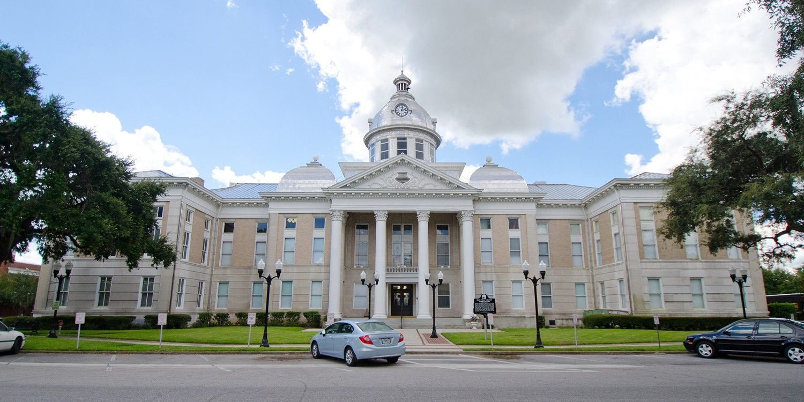

Tech School
The technical portion of my Air Force career began in San Angelo Texas in Goodfellow AFB. There I had to learn the fundamentals of signals analysis to fulfill my duties as a 1N2C. Following the 'quick' 2 months of I started using my free time away from the watchfloor to study comptia exams and learn anything i could online about network engineering with hopes of changing my career into a related role.
Fort Meade
After gaining certification and alot of self study, i got a new job in my new command at fort mead as a network engineer supporting a sigint mission. there i learned more about somputer networking and most importantly Data. I learned about how future proof a career ion data analytics could be and once again decided to drop what i was doing and do something else instead. I took all the online courses i could to learn more about data analytics with a plan to leave the army and become an analyst.
Florida
heres a picture of where i was born 0:. I was born in missoula, a city outside of my hometown of saltese. I occasionally travel back home to see family and take trips through the mountains and rivers of Montana. My favorite hobby is hiking. I love being outside and experienceing the aesthetics of the world. sights
